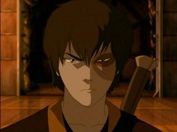

Fire Nation
The Fire Nation is one of the world's four nations and five sovereign states. It is an absolute monarchy led by the Fire Lord and home to most firebenders. Geographically, the nation is located along the planet's equator in the western hemisphere and is composed of several islands, named the Fire Islands. The Fire Nation is the second-largest nation in terms of area, following the Earth Kingdom, while its economy is the most powerful in the world; its strong industrial sector and extensive technological developments not only enabled the Fire Nation to create an extremely powerful military, but also initiated worldwide modernization and globalization. Before the foundation of the United Republic and the following global technological revolution, it was also the strongest and most advanced country in the world.
Historically, the Fire Nation experienced a substantial amount of internal strife. The country was united under the first Fire Lord after a long period of violent warlord rule, ushering into a period of religious government headed by the Fire Sages. However, the warlord period continued to influence the Fire Nation's trajectory, as the warlords' descendants became the nation's noble clans and maintained private armies as well as autonomous fiefs. Eventually, the Fire Lords took power away from the Fire Sages, installing themselves as secular monarchs. Power struggles within the royal family and among the noble clans repeatedly plunged the Fire Nation into civil war, yet the country's expansionist and progressive outlook helped to transform it into a economic and military powerhouse despite repeated crises. Periodically, the Fire Nation became strong enough to threaten the other nations. Eventually, the Fire Lords began to gradually disempower the noble clans, resulting in them become true autocrats, but also powerful enough to implement new policies to the benefit of all within their nation. The Fire Nation's increasing industrialization also greatly strengthened the country, and they were the leading power in the beginning of the world's technological renaissance. However, their confidence in their own greatness and competition for resources with the other nations led to a rise in xenophobic sentiment, a decline in spirituality, and the beginning of imperialist ambitions. This development ultimately contributed to the imperialistic Hundred Year War with the other three nations from 0 to 100 AG, as the empowered Fire Lords sought to use their country's power for global conquest. To further this goal, the country set up many colonies in occupied territories. The Fire Nation also committed many war crimes during this conflict, most infamously the genocide against the Air Nomads.
Fire Nation Cast
|  | Prince Zuko: The eldest child and only son of Princess Ursa and Fire Lord Ozai. Originally the primary enemy of Team Avatar, Zuko devoted three years to trying to capture the long-lost Avatar to end his banishment and regain his honor as Crown Prince of the Fire Nation. He is recognizable by the distinctive burn scar on the left side of his face, which was given to him by his father, Ozai. |
 |
Iroh: A retired Fire Nation general, a former Crown Prince of the nation, a Grand Lotus of the Order of the White Lotus, a firebending master, and a wise mentor to his nephew Zuko. Unlike many other individuals from the Fire Nation, particularly those within his own family, Iroh was a wise, easy-going, and spiritual man. He appreciated and admired the balance of the four elements, and even incorporated aspects of the other elements into his own firebending techniques. After the traumatic death of his son, Iroh saw Zuko as his own son rather than his nephew, and encouraged him to choose his own destiny, rather than a fate members of the royal family expected of him. |
| Fire Lord Ozai: The ruler of the Fire Nation during the final years of the Hundred Year War, reigning as Fire Lord from 95 to 100 AG. He was the second son of Fire Lord Azulon and Ilah, the younger brother of Iroh, uncle of Lu Ten, husband to Ursa, the father of Prince Zuko and Princess Azula, and the paternal grandfather of Izumi. Like his father and grandfather before him, Ozai sought to conquer the other nations and become the supreme ruler of the world. To do this, he planned to utilize Sozin's Comet to burn down the Earth Kingdom, renouncing the title of Fire Lord and declaring himself the Phoenix King, ruler of the world. | |
| Azula: A princess of the Fire Nation, daughter of Fire Lord Ozai and Ursa, younger sister of Zuko, and older half-sister of Kiyi. She was a key adversary of Team Avatar, chasing Avatar Aang and her banished brother far across the Earth Kingdom accompanied by her then two best friends, Mai and Ty Lee. A firebending prodigy, Azula was manipulative and obsessed with power. Azula harbored deep mental instabilities, believing her mother loved Zuko more than her. Raised by her father in an environment without a mother-figure, Azula had to be nothing less than perfect in her father's eyes in order to gain affection and attention from him. | |
| Mai: Mai was the daughter and eldest child of Ukano, the former governor of New Ozai, and his wife, Michi. During the last year of the Hundred Year War, she became one of Princess Azula's main allies, and therefore one of Team Avatar's greatest foes, as well as Prince Zuko's love interest once he returned to the Fire Nation. As one of the most privileged girls in the Fire Nation, she attended the Royal Fire Academy for Girls and became a friend of Princess Azula and Ty Lee at a young age. Mai was exceptionally proficient at throwing stilettos, a self-taught skill she developed out of boredom. Using small knives and spring-loaded stiletto holsters concealed in her robes, she was capable of besting numerous benders at once, despite not being a bender herself. She was recruited by Azula along with Ty Lee to capture the princess' brother and uncle, as well as the Avatar and his friends | |
| Ty Lee: a cheerful and energetic girl who hailed from the Fire Nation. As the daughter of a nobleman, she attended the Royal Fire Academy for Girls with her friends, Princess Azula and Mai. Growing up, Ty Lee dealt with six sisters who shared identical appearances with her. This caused her to feel a loss of individuality and led her to have a longing to be a unique, recognizable person, and a desire for attention from other people. Because of this, after she matured, she ran away from her home and joined a Fire Nation circus, becoming a skilled acrobatic performer and gaining more personal attention. Ty Lee was a formidable hand-to-hand combatant, often utilizing chi-blocking, a unique form of martial arts that targets pressure points located in the human body. By striking these, she was able to disrupt an individual's chi flow and temporarily paralyze them, thereby also preventing the victim from bending for a period of time. |